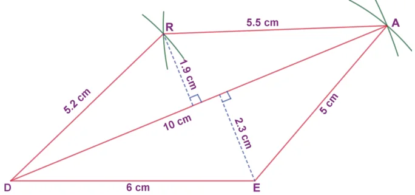
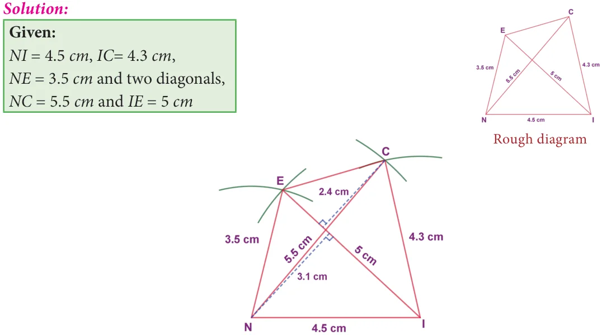
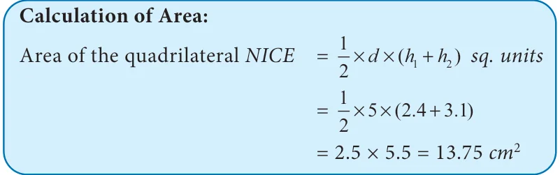
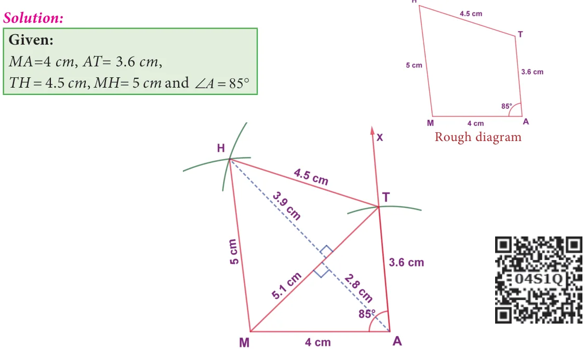
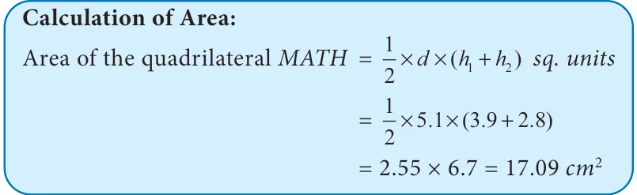
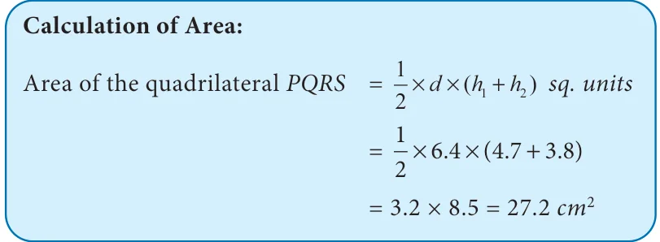

We have already learnt how to draw triangles in the earlier classes. A polygon that has got 3 sides is a triangle. To draw a triangle, we need 3 independent measures. Also, there is only one way to construct a triangle, given its 3 sides. For example, to construct a triangle with sides 3cm, 5cm and 7cm, there is only one way to do it.

Now, let us move on to quadrilaterals. A polygon that is formed by 4 sides is called a quadrilateral. Isn’t it? But, a quadrilateral can be of different shapes. They need not look like the same for the given 4 measures. For example, some of the quadrilaterals having their sides as 4 cm, 5 cm, 7 cm and 9 cm are given below.

So, to construct a particular quadrilateral, we need a 5 measure. That can be its diagonal or an angle measure. Moreover, even if 2 or 3 sides are given, using the measures of the diagonals and angles, we can construct quadrilaterals.

We shall now see a few types on constructing these quadrilaterals when its:
- (i)4 sides and a diagonal are given. (ii) 3 sides and 2 diagonals are given.
- (iii)4 sides and an angle are given. (iv) 3 sides and 2 angles are given.
- (v)2 sides and 3 angles are given.
5.10.1 Constructing a quadrilateral when its 4 sides and a diagonal are given
Example 5.21
Construct a quadrilateral DEAR with DE=6 cm, \(EA = 5\) cm, \(AR = 5.5cm\), \(RD = 5.2\) cm
and \(DA = 10\) cm. Also find its area.

Solution:


Steps:
- 1.Draw a line segment \(DE = 6\) cm.
- 2.With D and E as centres, draw arcs of radii 10 cm and 5 cm respectively and let them cut
at A.
- 3.Join DA and EA.
- 4.With D and A as centres, draw arcs of radii 5.2 cm and 5.5 cm respectively and let them cut
at R.
- 5.Join DR and AR .
- 6.DEAR is the required quadrilateral.

5.10.2 Construct a quadrilateral when its 3 sides and 2 diagonals are given
Example 5.22
Construct a quadrilateral NICE with NI=4.5 cm, \(IC= 4.3\) cm, \(NE= 3.5\) cm, \(NC= 5.5\) cm and \(IE = 5\) cm. Also find its area.

Steps:
- 1.Draw a line segment \(NI = 4.5\) cm.
- 2.With N and I as centres, draw arcs of radii 5.5 cm and 4.3 cm respectively and let
them cut at C.
- 3.Join NC and IC.
- 4.With N and I as centres, draw arcs of radii 3.5 cm and 5 cm respectively and let them
cut at E.
- 5.Join NE, IE and CE .
- 6.NICE is the required quadrilateral.

5.10.3 Construct a quadrilateral when its 4 sides and one angle are given
Example 5.23
Construct a quadrilateral MATH with MA=4 cm, \(AT= 3.6\) cm, \(TH = 4.5\) cm, \(MH= 5\) cm and \(\angle = 85 ^{\circ}\) . Also find its area.

Steps:
- 1.Draw a line segment \(MA = 4\) cm.
- 2.Make \(\angle A = 85 ^{\circ}\) .
- 3.With A as centre, draw an arc of radius 3.6 cm. Let it cut the ray AX at T.
- 4.With M and T as centres, draw arcs of radii 5 cm and 4.5 cm respectively and let them
cut at H.
- 5.Join MH and TH.
- 6.MATH is the required quadrilateral.

5.10.4 Construct a quadrilateral when its 3 sides and 2 angles are given
Example 5.24
Construct a quadrilateral ABCD with AB=7 cm, \(AD= 5\) cm, \(CD = 5\) cm, \(\angle = ^{\circ}\) and 60 . Also find its area.

- 1.Draw a line segment \(AB = 7\) cm.
- 2.At A on AB , make \(\angle BAY = 50 ^{\circ}\) and at B on AB, make \(\angle ABX = 60 ^{\circ}\) . Let them intersect
at C.
- 3.With A and C as centres, draw arcs of radius 5 cm each. Let them intersect at D.
- 4.Join AD and CD.
- 5.ABCD is the required quadrilateral.

5.10.5 Construct a quadrilateral when its 2 sides and 3 angles are given
Example 5.25
Construct a quadrilateral PQRS with PQ=QR=5 cm, \(\angle =\) , \(\angle =\) and \(\angle = ^{\circ}\) . Also find its area.

Steps:
- 1.Draw a line segment \(PQ = 5\) cm.
- 2.At P on PQ, make \(\angle QPX = 50\) .
- 3.With Q as centre, draw an arc of radius 5 cm. Let it cut PX at R.
- 4.At R on PR, make \(\angle PRS = 40\) and at P on PR, make \(\angle RPS = 80 ^{\circ}\) . Let them intersect at S.
- 5.PQRS is the required quadrilateral.
